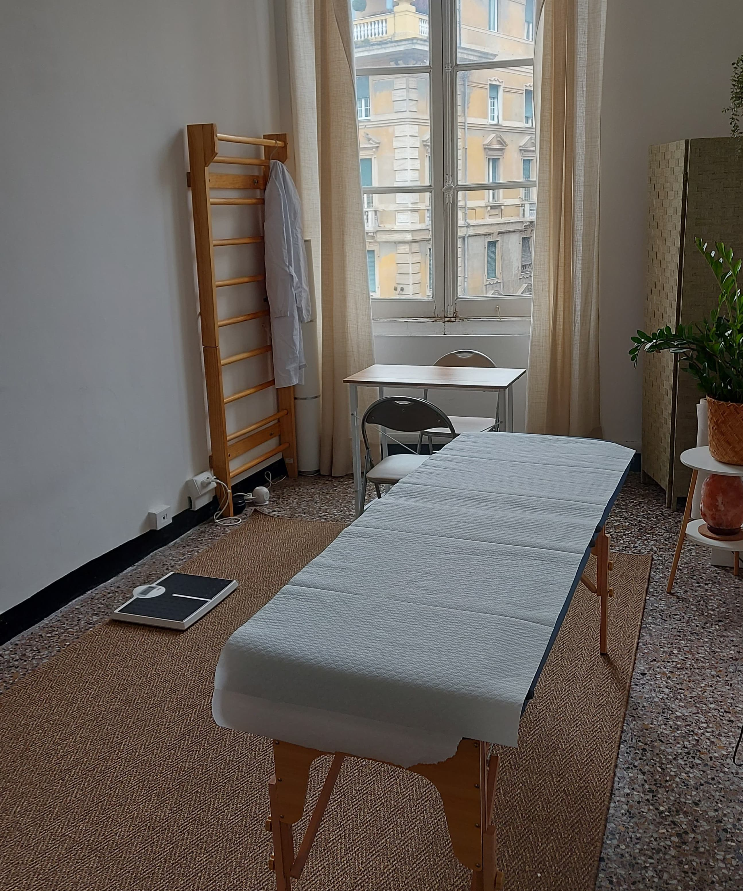
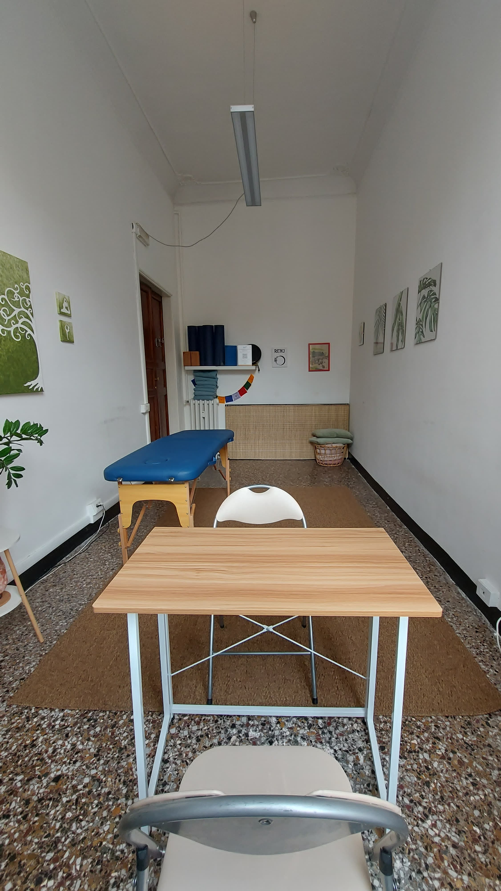
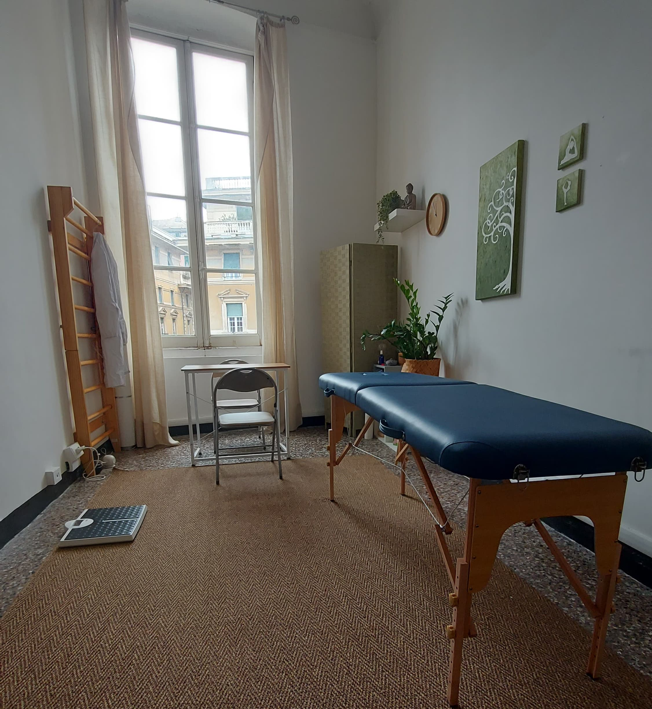
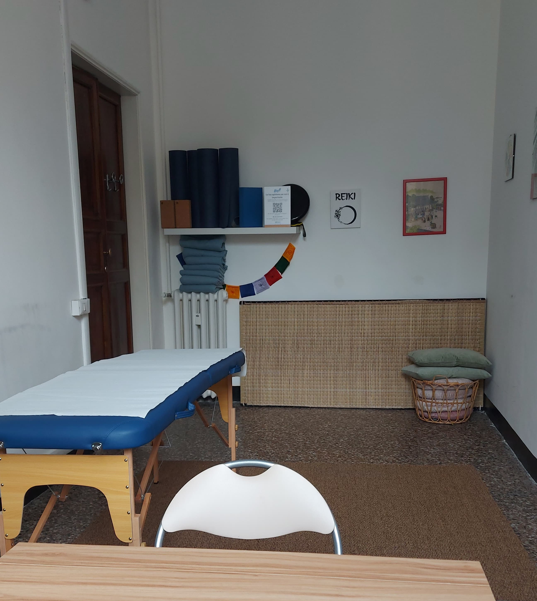

Mi presento, sono Davide!

Ho conseguito la laurea magistrale in Scienze della Nutrizione Umana presso l’Università degli Studi di Pisa e la laurea triennale in Biotecnologie all’Università degli Studi di Genova.
Sono iscritto all’albo dei Biologi del Piemonte, della Liguria e della Valle d’Aosta, sezione A, numero d’iscrizione A4063.
Durante il mio periodo di tirocinio alla casa di cura Villa Montallegro ho approfondito le mie conoscenze riguardo la nutrizione clinica ed ospedaliera.
Ho seguito con interesse svariati corsi di formazione riguardanti la nutrizione sportiva e l'integrazione nello sport, da sempre una mia passione.
Credo profondamente nella rieducazione alimentare come strumento di empowerment per il paziente. Ritengo che il nutrizionista non sia solo un esperto che consiglia, ma un insegnante che guida il paziente fornendogli gli strumenti per applicare i principi nutrizionali alla vita quotidiana. Solo così il paziente può diventare il vero nutrizionista di se stesso.
Per me, l’apprendimento è un processo continuo, e mi impegno a rimanere sempre aggiornato partecipando a webinar e corsi di formazione.



